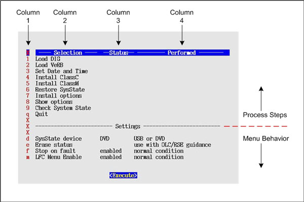

Operating Documentation
Direction 5193574-800, Rev# 22
LightSpeed 7.X Service Methods
Module Version 3.0, Version Date 8/6/12
Operating Documentation |
| Last Revised: | 23 May 2012 |
The LFC Menu tool is a means of executing the necessary process steps of a Load From Cold (LFC) procedure without using Linux command lines. The menu system performs the equivalent of the Linux command lines once the User has selected an item from the menu.
The Menu is divided vertically into two halves.
The top half, contains the ‘process steps’.
The bottom half, specialized or optional controls that affects the Menu behavior.
The Menu is divided horizontally into four columns.
Column 1 contains a ‘hot key’ that when typed selects that menu item.
Column 2 contains the text description of the process step.
Column 3 is the status of the Menu item defined on that row. The displayed status can be:
Blank - The process step has not been performed.
“OK” - The process step has been performed and was successful.
“FAULT” - The process step has been performed and was not successful.
Column 4 is the time and date the process step was performed
Illustration 1: LFC Menu

| NOTE: | Illustration above displays the LFC Menu as seen on a GOC6 & 6.5 Consoles that have been configured with a VeRB computer. The actual LFC Menu displayed on the system may differ from this tutorial depending on System and Console type configuration. |
Selecting the row and then the “Execute” button will perform a process step. The row is selected by one of the following means:
Using the ‘hot key’ defined in column 1
Scrolling the menu with the cursor keys
Clicking the row with the mouse
The “Execute” button is selected by one of the following means:
Clicking the [Execute] button with the mouse
Pressing <ENTER> on keyboard
| NOTE: | Keyboard Control C Functionality: Using <CTRL + C> keys to abort LFC process or to close any shell and/or pop-up windows will cause the LFC Menu to display a fault condition for the selected process step. Windows must be closed with either: a) Right click the window title bar, then selecting [Destory] from the menu. b) Left click the icon on the upper left corner of the window, then selecting [Close] from the menu. |
The LFC Menu Process Steps must be followed in numerical order. Upon completion of the Load From Cold, the LFC Menu will check that minimal process steps necessary have been executed.
| NOTE: | As an example, the following list describes all LFC Menu
processes for a GOC6.5 Operator Console. Depending on System and Operator
Console type configuration, some process items will be different. Illustration 2: GOC6.5 LFC Menu
|
“Load DIG” - selecting this item performs the load_darc_subsystem command.
“Load VeRB” - selecting this item performs the load_verb_subsystem command.
“Set Date and Time” - selecting this item will prompt the User through the steps needed to change the Host and DIG computers time of day.
“Install ClassC” - selecting this item performs install of Advanced Service Software. (Not required for System operation.)
| NOTE: | Class C Advanced Service software applies only to GE Healthcare personnel and customers with an Advance Service Limited License agreement. |
“Install ClassM” - selecting this item installs Restricted Service Software. (Not required for System operation.)
| NOTE: | Class M Restricted Service software applies only to GE Healthcare personnel. |
“Restore SysState” - selecting this item will restore the System State information from the device indicated in the “SysState device” setting (USB or DVD).
“Install Options” - selecting this item will launch the Install Options Utility. This selection requires the CT Applications to be running. (Not required if Options have been previously loaded and System State was saved afterwards. “Restore SysState” will restore Options.)
“Show Options” - selecting this item will display the software options currently installed.
“Check System State” - selecting this item will display the differences between the INFO file on the System State media to the INFO file on the scanner. Any differences are identified in RED. This selection requires the System State media to be inserted in the applicable device. (USB or DVD)
| NOTE: | Check System State: The purpose of this selection is for
confirming that System State has been successfully saved to external
media and to indicate if the System's System State media being used
is up to date. This tool displays INFO file settings of the System and the System State media. Difference between the two files are displayed in red. Though differences are identified, this does not mean there are problems. This simply means there are differences between the two INFO files and the user must determine if any corrective actions are needed. Example of a cases where the System State may be different between what is loaded on the system and on the external media would be: 1. Major Differences - Numerous entries different, especially “DAS or Console Type”. Incorrect System's System State Media selected. Locate correct System State media. 2. Minor Differences - If the Scan Database was recreated using “reconfig” and then a System State saved to external media, the entry in the INFO file for “Recreate Scan Database” will be set to “YES”. After performing a LFC, this entry is reset to “NO”. Using the Check System State selection at this time will flag the Recreate Scan Database entry as being different. Non issues, no corrective action required. |
“Quit” - selecting this option will exit the Menu. If all LFC Menu Process have been executed, the LFC Menu will terminate. If all LFC Menu process have not been completed, the User will receive a prompt to confirm that the Menu system is to be turned off.
“Execute” - this button causes the currently selected item to be performed.
The bottom half of the Menu contains attributes that affect the LFC Menu’s behavior. These attributes are designed to have the desired default state and are not used during normal conditions.
SysState device - The System State save and restore tool has been enhanced to support USB devices. This setting toggles the device used by the LFC Menu system between a USB device ( ex: Memory Stick or Drive) and DVD-RAM Drive.
Erase status - Most menu items are designed to run once. Therefore the Menu will not allow the selected item to be run if the status column has an entry. Selecting the “Erase status” item will allow the User to clear the status for an item. When ‘Erase status’ is selected, the user will be required to enter a number indicating which menu status is to be cleared. Enter the ‘hot key’ number next to the menu item you which to clear.
Stop on fault - The Menu system is designed to enforce the sequence of the process steps. Steps cannot be performed until their prerequisite steps are complete and successful. Selecting “Stop on fault” will toggle between stop on error and continue even if an error occurs. The default setting (i.e. normal condition) should not be changed unless instructed.
LFC menu enable - The Menu system is designed to automatically start following the Host reboot that occurs after the Application is loaded. When the process steps are complete the Menu will automatically remove itself from the start up process. This setting allows the User to turn the Menu start up off regardless of the process steps and/or conditions.
| NOTE: | Once the LFC Menu is turned off (either by confirming
the “Quit” Process Option or by disabling the LFC Menu
in the LFC Menu Settings), it will remain disabled. To turn the LFC Menu back on will require the following command string to be entered in a Linux Terminal windows: Open a Terminal Window, and log on as root. Type: [root@hostname] /usr/g/scripts/LFC/startLfcMenu.sh[ENTER] |